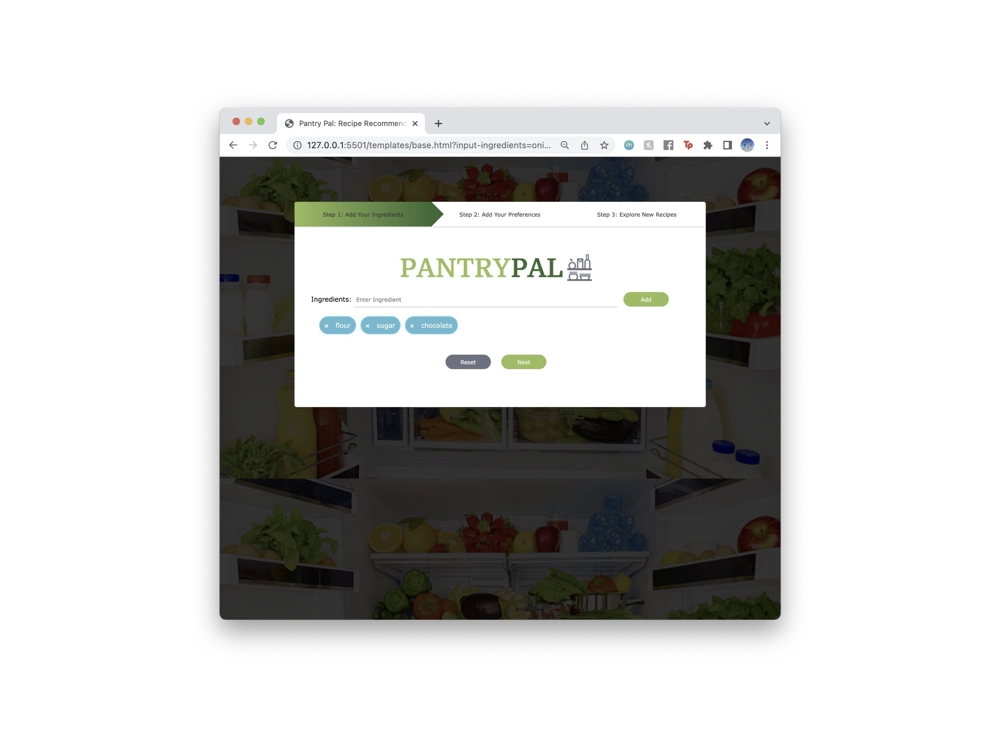

Work in: Frontend development, UI design,
implementation of similarity algorithms, usability testing Done for: Language and Information, Cornell
University Team: Myself and four other students Timeline: March 2023 - Present

The Problem
Food waste is a major problem that often results from spoilage
of food within our own homes. Sometimes, however, we simply do
not know what to make with the leftovers we have. Our goal was
to build a recipe recommendation where a user would input their
ingredients and preferences they have, and the system would
output a list of potential recipes that they could make with
food that they already have.
The Solution
Pantry Pal is an application that provides users with recipes
based on their unique needs. The user can input both required
and optional ingredients for the recipes to contain, as well as
the category (main dish, dessert, etc.) and the time they have
to cook. The user can also input allergies or food intolerances
and receive only recipes that meet these standards. From these
inputs, the app will generate a list of 20 suggested recipes
for the user based on how well they match the inputs and how
well the recipes have been rated. This app is intended for
people who cook but may be out of ideas, short on time, or have
food allergies.
What's Already Out There?
Our approach is relatively similar to existing systems;
however, we intend to include additional user inputs to produce
results that are more specific to the user's needs. In the
existing systems, the user input is primarily a list of
ingredients in the form of either a checklist or text. Once the
recipes have been outputted, most of them have additional
filters that the user can use to find results that are even more
specific to their expectations. For instance, many of them have
filters for necessary ingredients, dietary restrictions, and
meal type. Additionally, the existing systems rank the recipes
based on whether the user has all the ingredients to make the
recipe and the number of ingredients that they have that match
with the recipe. Our system will take these factors into
consideration while also taking into account the reviews and
ratings into the rankings.
Interface Layout
I aimed to create a simple and intuitive interface that would
provide users with an easy way to discover new recipes.
I chose to use a two-part form that would walk the user through
each of the steps. On top of the forms, there is a visual cue
that indicates which step you are at in the process. Each part
of the form also includes a reset button that allows the user
to easily clear any section of the form.
The first part includes a text bar that
allows the user to input the ingredients they have. Th user is
able to input add ingredients using the 'Add' button as well as
pressing the enter key.
In addition to adding ingredients, the user can also delete the
ingredients that they've previously entered by clicking on the
'x' on each ingredient element.
The second section includes the option to choose mandatory
ingredients that must be included in the dish as well as any
dietary restrictions, the category of food (main dish,
appetizer, etc.), and the time it takes to make the dish.
I ensured that the clickable elements are cohesive to make it
clear to the user that what they can alter. When user testing,
we recieved feedback that the ability to choose which ingredients
are required in the recipe was missed in an earlier prototype of
the site. As a result, I decided to make the design more uniform.
Algorithm
Given a list of ingredients from the user, we query a database
of foods from Food.com.
Basic Text Processing
We used regex to extract and clean the ingredient list from the SQL file
We used stemming on the ingredients in the database and input from the users so that plural ingredients were mapped to the same name (ex: egg and eggs)
We made sure to deduplicate user input so that certain ingredients were not given more weight when we rated them
Inverted Index
Since we had a lot of recipes in our dataset, we created an inverted index where the key is the ingredient and the value is a list of recipes that contain the ingredient
This allowed for our information retrieval to be much quicker than looking through each recipe one at a time
We also used an inverted index for the allergies in which each allergy was mapped to a list of dishes that conflict with the allergy
Boolean Search
We used boolean search to find recipes that contain the required ingredients inputted by the user (ex: egg AND flour AND water)
We used boolean search to remove any recipes that contain certain allergens (ex: lettuce AND tomato NOT meat)
Jaccard Similarity
As one component to evaluate the ranking of the recipe based on the query, we used Jaccard similarity. We calculate the similarity between the recipe ingredient list and the list of ingredients that the user inputted
This allows us to prioritize recipes that have a closer ingredient similarity to the query
Word-Document Matrix
To implement our LDA model, we used the built-in method in gensim to convert the reviews into bag-of-words format
Input/Output Examples
The output is a list of up to 20 dishes that are based on the
user's input. For situations in which the user's inputs, the
system will output a list that displays the recipe name, link,
rating based on user reviews, and ingredient list.
In the example above, all the ingredients and preferences inputted
by the user were proper. As a result, the system was able to
find a few recipes that fit the criteria set by the user.
In contrast, if there are improper preferences entered by the user,
or there are no recipes within the database that fit the user's
requests, then an error message will be produced instead of a list
of recipes.
In this example, the user inputted 'egg' as the mandatory ingredient
and set the dietary restriction as 'egg-free'. Because there are
conflicting inputs, there does not exist a recipe in which both
are true. Therefore, the system produces a 'no recipe found'
error message to indicate that the system compiled but there
are simply no recipes that meet the requirements.
Likewise, if there are improper ingredients inputted, or missing
inputs, a similar message will be outputted by the system. In this
final example, the user did not input anything. Because the system
depends on ingredients to filter out possible recipes, it is
unable to process anything. As a result, instead of a list of recipes,
there is a 'no proper ingredient entered' error message.